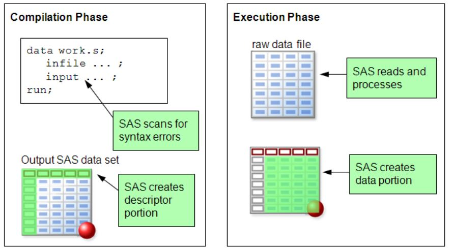
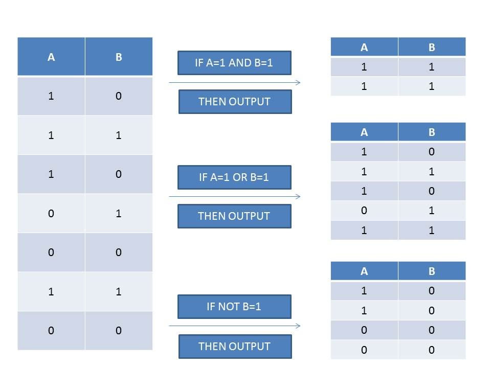

Statistiques et études économiques sous SAS
Manipulation des tables de données :
Les étapes DATA
Généralités
Description d'une étape DATA
La syntaxe d'une étape DATA est la suivante
DATA nom_de_ma_librairie.nom_de_ma_table ;
[instructions] ;
RUN ;
Cette étape consiste à créer une table qui sera stockée dans la librairie sélectionnée
Par défaut, la table sera stockée dans la librairie temporaire WORK
Déroulé d'une étape DATA

Compilation et éxecution d'une étape DATA
Compilation DATA illustration
data example_x;
x = 'CAT'
y = 'DOG';
run;
Compilation DATA correction
data example_x;
x = 'CAT';
y = 'DOG';
run;
Execution DATA illustration
Traitement d'un cas simple (une ligne avec output implicite)
Traitement itératif de chaque ligne
data grades;
StudentID=101; Class="A"; English=80; Math=70; output;
StudentID=102; Class="B"; English=. ; Math=60; output;
StudentID=103; Class="A"; English=70; Math=. ; output;
StudentID=104; Class="A"; English=80; Math=95; output;
StudentID=105; Class="B"; English=90; Math=80; output;
run;
L'instruction SET
Duplication de table
Pour dupliquer une table existante dans une autre librairie
DATA nom_nouvelle_librairie.nom_nouvelle_table ;
set nom_ancienne_librairie.nom_ancienne_table ;
RUN ;
Cette étape consiste à dupliquer l'ancienne table dans une autre librairie
Selection de variable
Il est possible de conserver ou de supprimer des variables d'une table à l'aide des instructions KEEP et DROP
L'instruction KEEP
Pour conserver une variable présente dans une table il convient d'utiliser comme suit le mot clé KEEP
DATA nom_nouvelle_librairie.nom_nouvelle_table ;
set ancienne_table ( keep =nom_de_la_variable_à_conserver ) ;
RUN ;
De manière équivalente, l'étape peut s'écrire comme suit
DATA nom_nouvelle_librairie.nom_nouvelle_table ;
set ancienne_table ;
keep nom_de_la_variable_à_conserver ;
RUN ;
L'instruction DROP
Pour supprimer une variable présente dans une table il convient d'utiliser comme suit le mot clé DROP
DATA nom_nouvelle_librairie.nom_nouvelle_table ;
set ancienne_table ( drop =nom_de_la_variable_à_supprimer ) ;
RUN ;
De manière équivalente, l'étape peut s'écrire comme suit
DATA nom_nouvelle_librairie.nom_nouvelle_table ;
set ancienne_table ;
drop nom_de_la_variable_à_supprimer ;
RUN ;
Selection de variable
Les quatre étapes ci-dessous renvoient la même table en résultat
| DATA cours2.Class ; | DATA cours2.Class ; | set sashelp.Class ; | set sashelp.Class ; | drop Age Height Weight ; | keep Name Sex ; | RUN ; | RUN ; |
| DATA cours2.Class ; | DATA cours2.Class ; | set sashelp.Class ( drop = Age Height Weight) ; | set sashelp.Class ( keep = Name Sex) ; | RUN ; | RUN ; |
Selection de modalités ou Filtrage d'observations
Pour conserver ou supprimer des modalités d'une variable présente dans une table, différentes instructions sont envisageables
Les instructions WHERE, OUTPUT et DELETE
L'instruction WHERE
Pour conserver uniquement les observations qui respectent une condition, on peut utiliser l'instruction WHERE
Le filtre s'applique à la lecture de la table sourceDATA nom_nouvelle_librairie.nom_nouvelle_table ;
set ancienne_table ( where =[condition] ) ;
RUN ;
De manière équivalente, l'étape peut s'écrire comme suit
Le filtre s'applique à l'écriture de la table cibleDATA nom_nouvelle_librairie.nom_nouvelle_table ;
set ancienne_table ;
where [condition];
RUN ;
Les instruction OUTPUT et DELETE
Pour conserver uniquement les observations qui respectent une condition, on peut utiliser les instructions OUTPUT ou DELETE
DATA nom_nouvelle_librairie.nom_nouvelle_table ;
set ancienne_table;
If [condition] then OUTPUT ;
RUN ;
De manière symétrique, l'étape peut s'écrire comme suit
DATA nom_nouvelle_librairie.nom_nouvelle_table ;
set ancienne_table;
If [condition] then DELETE ;
RUN ;
Selection de variable
Les quatre étapes ci-dessous renvoient la même table en résultat
| DATA cours2.Class_yng ; | DATA cours2.Class_yng ; | set sashelp.Class ; | set sashelp.Class ; | if Age < 15 then OUTPUT ; | if Age >= 15 then DELETE ; | RUN ; | RUN ; | DATA cours2.Class_yng ; | DATA cours2.Class_yng ; | set sashelp.Class ( | set sashelp.Class ; | where = (age < 15) ) ; | where age < 15 ; | RUN ; | RUN ; |
Les instructions OBS et FIRSTOBS
Il est également possible de sélectionner les variables selon leur numéro de lignes
Ici on choisit les lignes de i à j (j-i+1 observations)Il faut que j soit supérieur ou égal à i !
DATA cours2.Class_5 ;
set sashelp.Class ( firstobs = i obs = j ) ;
RUN ;
Par défaut l'option firstobs est égal à 1, le code ci-dessous renvoie les j premières lignes du tableau
DATA cours2.Class_5 ;
set sashelp.Class ( obs = j ) ;
RUN ;Remarques
Les instructions WHERE, FIRSTOBS, OBS, KEEP et DROP peuvent être des options de l'instruction SET
Les instructions OUTPUT et DELETE ne peuvent pas être utilisées comme des options
Remarques
Afin de définir le complémentaire d'une condition il est possible d'utiliser le mot clé NOT devant une condition
| DATA cours2.Class_yng ; | DATA cours2.Class_yng ; | set sashelp.Class ; | set sashelp.Class ; | if Age < 15 then OUTPUT ; | if NOT ( Age < 15 ) then DELETE ; | RUN ; | RUN ; |
Remarques
L'instruction WHERE doit être unique dans une étape DATA
| DATA cours2.Class_yngM ; |
|
set sashelp.Class ; |
|
where ( Age < 15 and Sex = "M" ) ; |
|
|
RUN ; |
|
Dans le second exemple, seule la seconde instruction WHERE est prise en compte
Remarques
Il est également possible de créer plusieurs table en une seule instruction DATA
DATA cours2.Class_Garcons cours2.Class_filles ;
set sashelp.Class ;
if Sex = "M" then OUTPUT cours2.Class_Garcons ;
else OUTPUT cours2.Class_filles ;
RUN ;
ATTENTION
Il est possible de modifier une table existante
Pour ce faire, il suffit d'appeler la même table dans l'instruction DATA et l'instruction SET
La plus grande prudence doit être observée quand on modifie une table sans quoi des données peuvent être accidentellement et définitivement supprimées
ATTENTION
On peut supprimer définitivement toutes les observations d'une table en se trompant lors de la conservation des variables ou des modalités
Exemple
DATA
cours2.Class;
set cours2.Class ( where = (Sex = 'Male')) ;
RUN ;
Le système ne génère pas de message d'avertissement
Le programme s'exécute mais il ne retient que les variables telles que définies dans l'instruction where
Or Sex vaut 'M' ou 'F' , mais pas 'Male' ; la table est donc vidée de toutes les observations et ce, de manière définitive
Création et Modification des attributs d'une variable
Création de variables
Pour créer une variable, SAS n'a besoin que de son nom et lui attribuer une ou plusieurs valeurs à l'aide du symbole =
DATA cours2.Class;
set cours2.Class ;
un = 1;
n = _N_;
Nom = Name;
RUN ;
Création de variables
Le programme ci-dessus génère trois nouvelles variables, qui seront créées dans trois nouvelles colonnes à droite de la table, et qui prendra pour chaque observation :
- "un" aura pour chaque observation la valeur 1 et sera par défaut une variable numérique
- "n" aura pour chaque observation la valeur du numéro d'observation (i.e. le numéro de la ligne sur laquelle se trouve l'observation) et sera donc une variable numérique
- "Nom" aura comme valeur la valeur et les attributs de la variable Name
L'instruction RENAME
Il est possible de renommer une variable à l'aide de l'instruction RENAME
A la lecture
DATA nom_nouvelle_librairie.nom_nouvelle_table ;
set ancienne_table ( rename =(ancien_nom = nouveau_nom) ) ;
RUN ;
De manière équivalente, l'étape peut s'écrire comme suit
A l'écriture
DATA nom_nouvelle_librairie.nom_nouvelle_table ;
set ancienne_table ;
rename ancien_nom = nouveau_nom ;
RUN ;
L'instruction LENGTH
Il est possible de modifier la longueur d'une variable à l'aide de l'instruction LENGTH
DATA nom_nouvelle_librairie.nom_nouvelle_table ;
length ma_variable < $ > n ;
set ancienne_table ;
RUN ;
Le symbole $ est utilisé dans le cas de variable qualitative
n est un entier qui représente la taille maximale de la variable
L'instruction LENGTH
L'instruction LENGTH s'utilise comme suit
DATA cours2.Class ;
length Name $45 ;
set sashelp.Class ;
RUN ;
Les fonctions PUT et INPUT
Il est possible de convertir une variable alphanumérique en variable numérique et inversement à l'aide des fonctions PUT et INPUT
Les fonctions PUT et INPUT
Le programme suivant convertit une variable caractère en numérique
DATA nom_de_ma_librairie.nom_de_ma_table ;
set nom_ancienne_librairie.nom_ancienne_table ;
Format var_num n.w ;
var_num = input (var_car , n.w) ;
RUN ;
Les fonctions PUT et INPUT
Le programme suivant convertit une variable numérique en caractère
DATA nom_de_ma_librairie.nom_de_ma_table ;
set nom_ancienne_librairie.nom_ancienne_table ;
Format var_car $n. ;
var_car = put (var_num , $n.) ;
RUN ;
Exemples de ces fonctions
A PUT() convertit une variable caractère vers une autre variable caractère.
B PUT() convertit une variable numérique vers une variable caractère avec une valeur numérique .
C PUT() convertit une variable caractère avec un format "user-defined" vers une autre variable caractère.
D INPUT() convertit une variable caractère avec une valeur numérique et un informat vers une v. numérique.
E INPUT() convertit une variable caractère avec une valeur numérique et un informat vers une v. caractère.
F INPUT() convertit une variable caractère avec une valeur numérique et un informat vers une v. numérique.
Autres instructions
Il est également possible de modifier le label, le format ou l'informat des variables
Les labels
Le label d'une variable est un champ texte, qui accepte les caractères spéciaux, et qui permet de fournir une description de la variable
Si un label est défini, c'est lui qui apparaitra dans la fenêtre Sortie
Il se définit dans une étape DATA comme suit
Label variable="MON_LABEL" ;
Les formats
Le mot clé format renvoie au format de
présentation ou de stockage
Bien qu'attribut facultatif il s'avère important
Il peut correspondre à un format prédéfini ou personnalisé
Format variable < $ > format n.< d > ;
Les informats
Le mot clé informat renvoie au format de lecture
Il peut également correspondre à un format prédéfini ou personnalisé
Informat variable < $ > informat n.< d > ;
Format et informat : exemples
data
amount;
input
nombre: best8. salaire comma8. quantity dollar10.;
format
nombre salaire quantity dollar12.4;
cards;
123 23,333 $2,23,000.66
124 30,000 $5,55,000.78
;
run;

Concaténation, fusion et mise à jour de tables
La concaténation
La concaténation consiste à l'assemblage verticale de tables
On peut concaténer 2 tables facilement avec l'instruction SET
DATA nom_librairie.nom_table_concat ;
set table_1 table_2 ;
RUN ;
La concaténation
Pour que le système empile correctement les tables il faut que les variables aient exactement le même nom et soient de même type (numérique ou caractère)
DATA cours2.Classe_entiere ;
set cours2.Class_Garcons Cours2.Class_filles ;
RUN ;
Afin de prévenir les troncatures, le système renvoie un avertissement si deux variables portent le même nom et sont de même type mais présentent des longueurs différentes
La concaténation
Il est possible d'utiliser l'instruction BY afin que la table concaténée soit triée selon une ou plusieurs variables
Les tables sources doivent pour cela être correctement triée au préalable
Le concaténation
On l'obtient avec la syntaxe suivante
DATA nom_librairie.nom_table_concat ;
set table_1 table_2 ;
by var1 var2 ... varn ;
RUN ;
Il est possible de trier par autant de variables que l'on souhaite
Le tri s'effectuera selon l'ordre défini par le programme
La concaténation
Si nous souhaitons trier selon le sexe puis l'age des élèves, nous écrirons le programme suivant
DATA cours2.Classe_entiere ;
set cours2.Class_Garcons Cours2.Class_filles ;
by Sex Age ;
RUN ;
Remarque
Le fait que les tables doivent être préalablement triées rend cette option peut utilisée
On préfèrera trier la table concaténée après l'opération
| PROC SORT data =cours2.Class_Filles; | DATA cours2.Classe_entiere ; | by Sex Age; RUN ; | set cours2.Class_Filles cours2.Class_Garcons ; |
PROC SORT data
=cours2.Class_Garcons;
|
RUN
; |
by
Sex Age;
RUN
;
|
|
DATA
cours2.Classe_entiere ;
|
PROC SORT data
=cours2.Classe_entiere;
|
set
cours2.Filles cours2.Garcons ;
|
by
Sex Age;
RUN
;
|
by
Sex Age ;
|
|
RUN
;
|
|
|
|
|
|
|
La concaténation
Il est possible de modifier les tables d'entrée en utilisant les options de l'instruction SET
DATA cours2.Classe_entiere ;
set cours2.Class_Garcons (options) Cours2.Class_filles (options);
RUN ;
Exemple
Nous souhaitons créer une table avec les filles de plus de 15 ans et les garçons de plus de 1m60
DATA cours2.Classe_entiere ;
set cours2.Class_Garcons (
rename =(Height=Taille_en_m) where =(Taille_en_m >= 160/2.54))
Cours2.Class_filles (
rename =(Height=Taille_en_m) where =(Age>=15));
Taille_en_m = Taille_en_m * 2.54;
RUN ;
La concaténation
Il est possible de traquer la table d'où provient les données que l'on vient d'ajouter à l'aide de l'option IN
Exemple
DATA cours2.Classe_entiere ;
set cours2.Class_Garcons ( In = Type)
Cours2.Class_filles ;
If Type = 1 then table_origine = "Garcons" ;
else table_origine = "Filles" ;
RUN ;
Le mot clé IN crée un booléen qui est égal à 1 si l'individu est contenu dans la table appelée précédemment à l'instruction et 0 sinon
La fusion
Nous avons vu jusqu'à maintenant la concaténation, c'est à dire l'ajout d'individus (ou de lignes) en concaténant plusieurs tables
La fusion permet d'ajouter des variables (ou des colonnes) en fusionnant à l'aide de l'instruction MERGE deux tables selon un identifiant qui complètera de manière obligatoire la clause BY
DATA nom_de_ma_librairie.table_fusionnée ;
Merge table1 table2 ;
by Identifiants;
RUN ;
Remarque
De même que pour la concaténation, la clause BY indique que les tables doivent impérativement être triées préalablement à l'exécution de l'étape DATA
Attention
Seuls les identifiants doivent être des variables de même noms. Leurs valeurs sont égales entre les 2 tables.
Si deux variables (non identifiants) portent le même nom dans les deux tables, les données de la première table seront écrasées
Sans clause BY, l'instruction revient à une simple juxtaposition des deux tables
La fusion
La fusion consiste à l'assemblage horizontale de tables
DATA cours2.Notes_classe ;
merge cours2.Class cours2.Note ;
by Name ;
RUN ;
La fusion
La fusion peut générer des valeurs manquantes dans le cas où un individu est identifié dans une table mais pas dans l'autre
Afin d'éviter ces valeurs manquantes on pourra fusionner en ne conservant que les individus d'une seule table
DATA cours2.Notes_classe ;
merge cours2.Class cours2.Note_rattrapage ( IN = A);
by Name ;
if A ;
RUN ;
La mise à jour ou UPDATE
La mise à jour de table peut être vue comme un cas particulier de la fusion
Elle consiste en l'ajout de données initialement manquantes ou en une actualisation de données contenues dans une table
Elle s'effectue avec l'instruction UPDATE
DATA nom_de_ma_librairie.Table_update ;
update table1 table2 ;
by Identifiants ;
RUN ;
La mise à jour ou UPDATE
Appliquée à notre exemple, l'update s'utilise comme suit
DATA cours2.note_finale ;
update cours2.Note cours2.Rattrapages ;
by Name ;
RUN ;
L'instruction By nous rappelle une fois encore que les tables doivent au préalable être dûment triées
Les conditions et les boucles
Boucle DO
Il existe 3 types de boucles sous SAS
Les boucles finies DO TO
Les boucles "tant que" DO WHILE
Les boucles "jusqu'à" DO UNTIL
Les boucles finies
Les boucles finies ont la synthaxe suivante
do i = n to m by s ;
instruction_1 ;
instruction_2 ;
instruction_3 ;
(...)
instruction_n ;
end ;
Les boucles finies
Les instructions sont réalisées de manière itérative
A chaque fin de la boucle d'instructions signalée par le mot clé end i est incrémenté de la valeur s (qui représente le pas)
Par défaut s =1
La boucle s'arrête lorsque i devient strictement supérieur à m
Les boucles DO WHILE
Les boucles "tant que" exécutent les instructions tant que la condition définie est vérifiée
do while (condition)
instruction_1 ;
instruction_2 ;
instruction_3 ;
(...)
instruction_n ;
end ;
Les boucles DO WHILE
Les instructions sont réalisées de manière itérative
A chaque fin de la boucle d'instructions signalée par le mot clé end la condition est testée
La boucle s'arrête lorsque la condition n'est plus vérifiée
Les boucles DO UNTIL
Les boucles "jusqu'à" exécutent les instructions tant que la condition définie n'est pas vérifiée
do until (condition)
instruction_1 ;
instruction_2 ;
instruction_3 ;
(...)
instruction_n ;
end ;
Les boucles DO UNTIL
Les instructions sont réalisées de manière itérative
A chaque fin de la boucle d'instructions signalée par le mot clé end la condition est testée
La boucle s'arrête lorsque la condition est vérifiée
Note
Dans la suite de ce chapitre toutes les instructions peuvent être remplacées par des boucles d'instructions
La condition IF THEN ELSE
Certaines instructions doivent être réalisées si une condition est au préalable remplie
Le mot clé IF permet d'introduire de la conditionnalité
if condition(s) then instruction ;
else instruction ;
Exemples
DATA cours2.Resultats_promo ;
set cours2.Note_Finale;
if note >= 10 then Result = "Validé";
else Result = "Non validé" ;
RUN ;
La clause Else est facultative
DATA cours2.Resultats_promo ;
set cours2.Note_Finale;
if note >= 10 then Output ;
RUN ;
Conditionnalité multiple
On peut définir plusieurs conditions au sein d'une étape data avec ou sans clause Else
DATA cours2.Resultats_session1 ;
set cours2.Note;
if note >= 10 then Result = "Validé";
else if note >= 8 then Result = "Rattrapage";
else Result = "Non validé" ;
RUN ;DATA cours2.Resultats_session1 ;
set cours2.Note;
if note >= 8 and note < 10 then Result = "Rattrapage";
if note >= 10 then Result = "Validé";
if note < 8 then Result = "Non validé" ;
RUN ;Remarques
La clause Else permet d'éviter à avoir à lister toutes les conditions
Elle permet de gérer les cas qui ne respectent pas une condition et d'éviter, dans le cas de création d'une ou plusieurs variables, de générer des valeurs manquantes
Remarques
Les conditions peuvent être multiples, et ce avec les opérateurs and, or et not
L'opérateur and signifie que les deux conditions doivent être vérifiées
L'opérateur or signifie qu'au moins une des conditions doit être vérifiée
L'opérateur not signifie que le complémentaire de la condition doit être vérifié
Illustration
Remarques
L'instruction après le mot clé then ou else doit être unique
Il est parfois nécessaire de définir plusieurs instructions
Pour cela, il est possible d'utiliser la "boucle" do end comme suit
if condition(s) then do;
instruction_1 ;
instruction_2 ;
... ;
instruction_N ;
end;
else do;
instruction ;
instruction_1 ;
instruction_2 ;
... ;
instruction_N ;
end;
le Bloc SELECT WHEN
Ces instructions permettent de gérer la conditionnalité multiple sur une variable unique
select (variable) ;
when condition_1 instruction_1;
when condition_2 instruction_2;
(...)
when condition_n-1 instruction_n-1;
otherwise instruction_n ;
end;
Exemple
DATA cours2.reclassification ;
set sashelp.Class;
select (Sex) ;
when ('F') cat='Female';
when ('M') cat='Male';
otherwise cat='Indefini' ;
end;
RUN ;le Bloc SELECT WHEN
L'instruction Otherwise est facultative
La variable définie dans l'instruction Select est facultative et les conditions peuvent dès lors être multiples
Est-ce correct ? (longeur de Cat)
DATA cours2.reclassification ;
set sashelp.Class;
select ;
when (Sex = 'F' and Age >= 15) Cat='Female';
when (Sex = 'F' and Age < 15) Cat='Young Female';
when (Sex = 'M' and Age >= 15) Cat='Male';
when (Sex = 'M' and Age < 15) Cat='Young Male';
end;
RUN ;le Bloc SELECT WHEN
Dans le script précédent, on a un souci sur le longeur de Cat
Ce problème est ici résolu
DATA cours2.reclassification ;
set sashelp.Class;
select ;
when (Sex = 'F' and Age < 15) Cat='Young Female';
when (Sex = 'F' and Age >= 15) Cat='Female';
when (Sex = 'M' and Age >= 15) Cat='Male';
when (Sex = 'M' and Age < 15) Cat='Young Male';
end;
RUN ;Calcul et création de variables
Calcul de variables
Il n'est pas nécessaire de définir les variables en SAS
Le symbole = entraine l'affectation de valeurs à la variable
DATA nom_de_ma_librairie.nom_de_ma_table ;
nom_de_ma_variable = [expression valide];
RUN;
Exemple
Nous souhaitons calculer l'IMC (Indice de Masse Corporelle) des étudiants
DATA cours2.Class_entiere ;
set cours2.Class_entiere ;
Poids = Weight * 0.454545;
Taille = (Height * 2.54)/100;
IMC = Poids / Taille**2;
Conclusion = cat('L étudiant a un IMC de ', round(IMC,0.1));
RUN;Création de tables
Il est possible de créer de a à z une table en programmant une étape data ainsi que les commandes Input et Cards
DATA nom_de_ma_librairie.nom_de_ma_table ;
input nom_de_ma_variable_car $ nom_de_ma_variable_numerique ;
Cards;
modalité_car_1 modalite_num_1
modalité_car_2 modalite_num_2
...
modalité_car_N-1 modalite_num_N-1
modalité_car_N modalite_num_N
;
RUN;
Exemple
Les modalités sont séparées par des espaces " ", il est donc impossible de créer des modalités qui en sont composées
Il conviendra de modifier les " " par des "_"
DATA Cours2.nouveaux_eleves ;
input Name $ Sex $ Age Height Weight ;
Cards;
Jean-Charles M 21 58.645 102.786
Mathilde F 19 52.5 100
;
RUN;
Les tables sont ainsi créées directement à partir des informations renseignées par l'utilisateur
Génération de variables aléatoires
Il est possible de générer une table contenant un nombre fini de réalisations d'une variable aléatoire
Par exemple, afin d'obtenir un tirage de 100 réalisations de la loi normale centrée réduite, il convient d'écrire le progamme suivant :
DATA loi_normale ;
Do i = 1 to 100 ;
x = rannor(0);
Output ;
End ;
RUN;
Remarques
Ici, rannor(0) renvoie une réalisation de la loi normale mais beaucoup d'autres lois sont disponibles sous SAS
Afin de connaitre les mots clés des lois aléatoires existantes et leur fonctionnement, l'aide SAS s'avèrera indispensable
Une liste non exhaustive est donnée dans l'introduction de ce cours
Remarques
Le mot clé output s'avère dans ce cas indispensable
Sans lui SAS écraserait la valeur générée par la nouvelle valeur et ne générerait in fine qu'une unique valeur de x, correspondant à la dernière réalisation
Calcul de cumulés
Le calcul de cumulés n'est pas instantané avec le logiciel SAS
Le progamme ci-dessous ne renverra que des valeurs manquantes
DATA cumul ;
set sashelp.Class ;
cumul = cumul + 1 ;
RUN;
En effet la variable cumul n'existant pas dans la table Class, l'addition entre une valeur manquante et 1 renvoie une valeur manquante
Calcul de cumulés
De même, en initialisant la variable Cumul à 0, le programme ne renverra pas le cumul attendu
Le progamme ci-dessous ne renverra qu'une colonne de 1
DATA cumul ;
set sashelp.Class ;
cumul = 0 ;
cumul = cumul + 1 ;
RUN;
En effet la variable cumul étant égale à 0, l'addition entre une valeur nulle et 1 renvoie 1 à chaque ligne de la table
Ceci est du au mode de calcul et d'implémentation des lignes dans une table SAS
Pour aller plus loin
Le mode de remplissage des tables SAS fonctionnent comme une suite d'ajouts de lignes indépendants les uns des autres.
Pour palier à cela, il faut une instruction qui permettra de faire le lien entre 2 lignes successives des données entrantes.
L'instruction Retain
Afin de calculer des cumulés avec SAS, il sera indispensable de maitriser l'instruction retain
DATA cumul ;
set sashelp.Class ;
retain cumul 0 ;
cumul = cumul + 1 ;
RUN;Le programme ci-dessus génère une nouvelle variable numérique nommée cumul égale au numéro de ligne de la table
Le 0 initialise la variable cumul
Le retain permet à SAS de conserver en mémoire la dernière valeur de la variable cumul